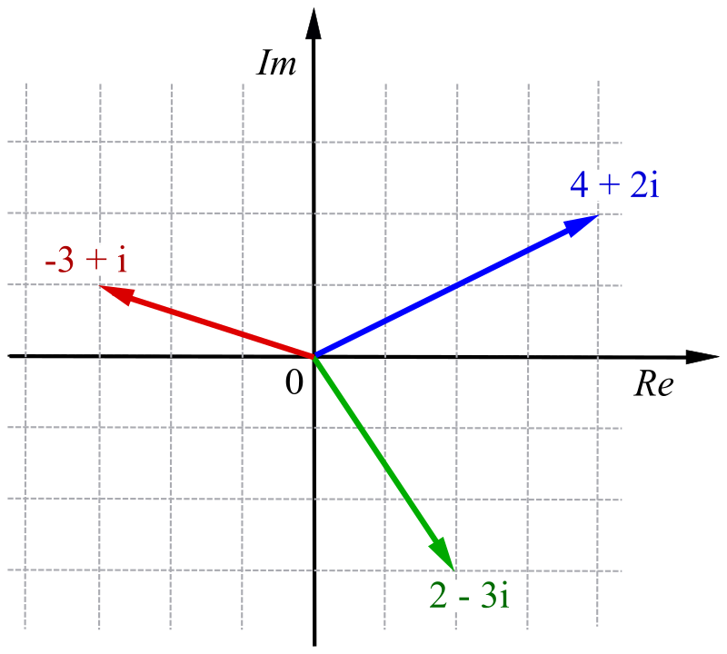

4. Komplexa tal
Vi börjar med att undersöka ekvationen \(x^2+16=0 \).
Då vi löser den märker vi att
\( \begin{array}{rcll} x^2 &=& -16 &\mid \sqrt{\quad} \\ x &=& \pm\sqrt{-16} \\ \end{array} \)
För att komma vidare inför vi \( \sqrt{-1} = i \). Då kommer vi vidare.
\( \begin{array}{rcll} x &=& \pm\sqrt{-1 \cdot 16} \\ x &=& \pm\sqrt{-1} \cdot \sqrt{16} \\ x &=& \pm4i \\ \end{array} \)
Ekvationen har alltså två lösningar, \( 4i \) och \( -4i \).
Det lilla i:et som vi införde gör talet 4i till ett komplext tal. Komplexa tala är en utvidgning av talområdet som börjar med
| Naturliga tal | \( \mathbb{N} \) | \( 0,1,2,3,\ldots \) |
| Hela tal | \( \mathbb{Z} \) | \( \ldots,-2,-1,0,1,2 \ldots \) |
| Rationella tal | \( \mathbb{Q} \) | \( \dfrac{m}{n}, m,n \in \mathbf{Z}, n \not= 0\), alltså bråktal |
| Reella tal tal | \( \mathbb{R} \) | alla tal ovan och dessutom \( \sqrt{2}, \pi \) osv |
| Komplexa tal | \( \mathbb{C} \) | alla tal ovan och tal som tex löser ekvationen \(x^2=-1\) |
Komplexa tal består av en reell del och en imaginär del, tex \( 3+2i \).
Vi kan beskriva dem med följande graf:

För komplexa tal kan vi använda oss av de fyra räknesätten.
Addition och subtraktion av komplexa tal påminner om addition och subtraktion med vektorer. Vi behandlar den reella och den imaginära delen skilt för sig.
Exempel 1 Addera \( (2-3i)+(-3+5i) \).
Lösning
Vi får följande:
\( \begin{array}{rcl} (2-3i)+(-3+5i) &=& 2-3i-3+5i \\ &=& (2-3)+(-3i+5i) \\ &=& -1+2i \\ \end{array} \)
Exempel 2 Mulitplicera \( (2-3i)\cdot(-3+5i) \).
Lösning
Vi får följande:
\( \begin{array}{rcll} (2-3i)\cdot(-3+5i) &=& 2(-3)+2\cdot5i -3i(-3) -3i\cdot 5i \\ &=& -6+10i+9i-15i^2 &\text{OBS! } \sqrt{-1}=i \Leftrightarrow -1=i^2 \\ &=& -6+19i-15(-1) \\ &=& 9+19i \\ \end{array} \)
Exempel 3 Bestäm \( \dfrac{2-3i}{-3+5i} \).
Lösning
För division vill bli av med i:et i nämnaren. Det blir vi genom att förlänga med nämnarens konjugattal.
\( \begin{array}{rcll} \dfrac{2-3i}{-3+5i} &=& \dfrac{(2-3i)(3+5i)}{(-3+5i)(3+5i)} \\ \\ &=& \dfrac{6+10i-9i-15i^2}{-9+25i^2} &\text{OBS! } \sqrt{-1}=i \Leftrightarrow -1=i^2 \\ \\ &=& \dfrac{6+10i-9i-15(-1)}{-9+25(-1)} \\ \\ &=& \dfrac{21+i}{-34} \\ \\ &=& -\dfrac{21}{34} -\dfrac{i}{34} \\ \\ \end{array} \)
I skolvärden stöter vi emellan åt på komplexa tal då vi skall lösa andragradsekvationer. Hittills har vi nöjt oss med att påstå att ekvationen saknar lösningar då sanningen är att den saknar reella lösningar.
Exempel 3 Lös ekvationen \( x^2+2x+5=0 \).
Lösning
Rotformeln ger oss att
\( \begin{array}{rcll} \dfrac{-2\pm\sqrt{2^2-4\cdot 1 \cdot 5}}{2\cdot 1} &=& \dfrac{-2\pm\sqrt{-16}}{2} \\ \\ &=& \dfrac{-2\pm 4i}{2} \\ &=& \dfrac{2(-1\pm 2i)}{2} \\ &=& -1\pm 2i \\ \end{array} \)
Uppgifter
- Varför finns det komplexa tal?
Man har skapat de komplexa talen för att kunna lösa ekvationer av typ \(x^2 = -1\).
- Bestäm de reella och komplexa lösningarna till ekvationen.
- \( 2x^2 -8 =0 \)
Helt normalt, \( x = \pm 2 \).
- \( 2x^2 +8 =0 \)
Vi får \( x = \pm2i \).
- \( 3x^2 - 27 =0 \)
Helt normalt, \( x = \pm 3 \).
- \( 3x^2 + 27 =0 \)
Vi får \( x = \pm3i \).
- \( 2x^2 -8 =0 \)
- Lös följande ekvationer.
- \( x^2 -4x +20 =0 \)
Med rotformeln får vi \( x= 2 \pm 4i \).
- \( x^2 -4x +13 =0 \)
Vi får \( x= 2 \pm 3i \).
- \( x^3 +5x = 4x^2 \)
Vi skriver ekvationen som \( x^3 -4x^2+5x =0 \) och bryter ut ett \( x \), \( x(x^2-4x+5)=0 \).
Nollregeln och rotformeln ger oss att \( x= 0 \) eller \( x =2\pm i \).
- \( x^2 -4x +20 =0 \)
- Bestäm rötterna för ekvationerna.
- \( x^2 = -25 \)
Vi får \( x = \pm 5i \).
- \( (x^2+8)(2x^2-10)=0 \)
Vi utnyttjar oss av nollregeln och får \(x = \pm \sqrt{8}i \) och \( x = \pm \sqrt{5} \).
- \( (x^2+5)(x^2-16)=0 \)
Vi utnyttjar oss av nollregeln och får \(x = \pm \sqrt{5}i \) och \( x = \pm 4 \).
- \( x^3 = -12x \)
Vi börjar med att flytta över och bryter ut, \( x(x^2 +12) =0 \). Nollregeln ger oss att \( x=0 \) eller \( x = \pm 2\sqrt{3}i\).
- \( x^2 = -25 \)
- Bestäm de reella och komplexa lösningarna för följande ekvationer.
- \( (x+1)^2 = 16 \)
Vi får att \( x = \pm 4 -1\). Alltså \( x = 3 \) eller \( x = -5\).
- \( (x+1)^2 = -16 \)
Vi får att \( x = \pm 4i -1\).
- \( (x+1)^2 = 16 \)
- Utför följande uträkningar
- \( (2+3i)+(1+2i) \)
Vi får att \( (2+3i)+(1+2i) = 3+5i \).
- \( (3-i)+(-4+i) \)
Vi får att \( (3-i)+(-4+i) = -1 \). \(i\):na tar ut varandra.
- \( (-1+2i)-(2+3i) \)
Vi får att \( (-1+2i)-(2+3i) = -3-i \).
- \( (2+3i)+(1+2i) \)
- Bestäm
- \( (2+3i)\cdot(1+2i) \)
Vi får att \( (2+3i)\cdot(1+2i) = 2+4i+3i+6i^2 = 2+6i-6 = -4+6i \).
- \( (-3-2i)\cdot(4+2i) \)
Vi får att \( (-3-2i)\cdot(4+2i) = -12-6i-8i-4i^2 = -12-14i+4 = -8-14i \).
- \( (1+i)\cdot(-1-i) \)
Vi får att \( (1+i)\cdot(-1-i) = -1-i-i-i^2 = -1-2i+1 = -2i \).
- \( (2+3i)\cdot(1+2i) \)
- Bestäm
- \( \dfrac{1+2i}{3+i} \)
Vi får att
\( \begin{array}{rcl} \dfrac{1+2i}{3+i} &=& \dfrac{(1+2i)\cdot (3-i)}{(3+i)\cdot (3-i)} \\ &=& \dfrac{3-i+6i-2i^2}{9-i^2} \\ &=& \dfrac{3+5i+2}{9+1} \\ &=& \dfrac{5+5i}{10} \\ &=& \dfrac{1+i}{2} \\ \end{array} \)
- \( \dfrac{2+3i}{-2-i} \)
Vi får att
\( \begin{array}{rcl} \dfrac{2+3i}{-2-i} &=& \dfrac{(2+3i)\cdot (-2+i)}{(-2-i)\cdot (-2+i)} \\ &=& \dfrac{-4+2i+6i+3i^2}{4-i^2} \\ &=& \dfrac{-4+8i-3}{4+1} \\ &=& \dfrac{-7+8i}{5} \\ \end{array} \)
- \( \dfrac{-1+i}{2-3i} \)
Vi får att
\( \begin{array}{rcl} \dfrac{-1+i}{2-3i} &=& \dfrac{(-1+i)\cdot (2+3i)}{(2-3i)\cdot (2+3i)} \\ &=& \dfrac{-2-3i+2i+3i^2}{4-9i^2} \\ &=& \dfrac{-2-i-3}{4+9} \\ &=& \dfrac{-5-i}{13} \\ \end{array} \)
- \( \dfrac{1+2i}{3+i} \)